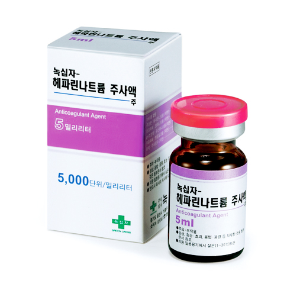

헤파린나트륨
출처 : 약학정보원
효능 : 혈액의 응고 지연
용법/용량 : 보통 정맥 내에 주사하거나 혈액 체외순환시의 관류혈액에 첨가하여 사용한다.
부작용/주의사항 : 이 약은 출혈의 위험이 높은 질병에는 매우 주의하여 사용한다. 이 약을 투여한 환자에게 거의 모든 부위에서 출혈이 발생할 수 있다. 치명적인 출혈이 발생하였다. 헤파린이 포함된 항응고 치료 동안 급성 부신 기능 부전을 초래하는 부신출혈, 난소출혈, 복막뒤출혈이 발생하였다.